# Construct example data set
df <- n01 |>
transmute(
V1 = v1,
V2 = v1 + v2,
V3 = v1 + v2 + v3
)
# Add anomalies
df[999, ] <- tibble(V1 = -2, V2 = 3.4, V3 = 1.3)
df[1000, ] <- tibble(V1 = 1.2, V2 = -1.8, V3 = 1.1)
df$anomaly <- c(rep(FALSE, 998), TRUE, TRUE)3 Multivariate probability distributions
While we will cover anomaly detection in univariate data, most of the methods we will discuss are for multivariate data. We will therefore need to understand some basic concepts of multivariate probability distributions.
3.1 Hiding in high-dimensional space
When first thinking about multivariate probability distributions, it can take some time to develop an intuition for how they behave. One way to start developing this intuition is to plot data with increasing numbers of dimensions, starting with the univariate case.
Let’s take the n01 data set, which contains 10 variables, each from independent standard Normal distributions. We will consider only the first three variables, but to make the example more interesting, we will consider cumulative sums of these variables. We will also add a couple of anomalies, and then see if we can find them using some data visualizations.
First, we can do a strip plot of each variable to visualize the data from a univariate perspective.
df |>
tidyr::pivot_longer(V1:V3) |>
ggplot(aes(x = value, y = 0, col = anomaly)) +
geom_jitter(width = 0) +
facet_grid(name ~ .) +
scale_y_discrete() +
labs(x = "", y = "") +
scale_color_manual(values = c("#999999", "#D55E00"))
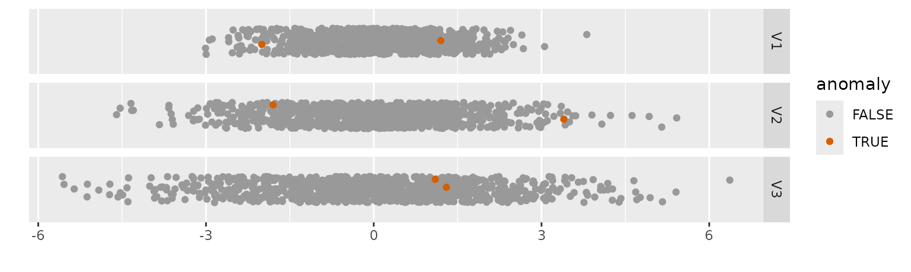
The only obvious feature of these graphs is that the variance increases in successive panels. This is because the variance of the sum of independent random variables is the sum of their variances. The two anomalies are plotted in each panel, but they are not obviously different from the other observations.
Now we will plot pairwise scatterplots of the four variables, giving the bivariate perspective.
GGally::ggpairs(df[, 1:3],
lower = list(
continuous = GGally::wrap("points"),
mapping = aes(color = df$anomaly)
)
) +
scale_color_manual(values = c("#999999", "#D55E00"))
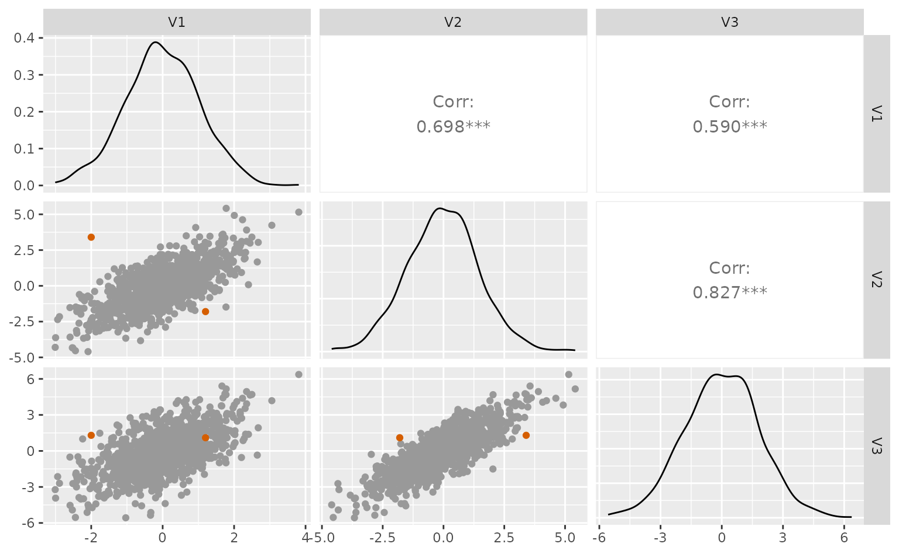
This shows that there are positive relationships between the variables, with the strongest between V2 and V3. One of the anomalies is now clearly separate from the other observations in the plot of V2 vs V1 (the top left scatterplot). For this anomaly, the value of V1 is -2, which is not particularly unusual compared to the other observations. Similarly, the value of V2 is 3.4, which is also not particularly unusual. But because of their positive correlation, the combination of these two values is unusual, so it shows up in the 2-dimensional scatterplot. The other anomaly does not look particularly unusual in any of the plots.
To visualise trivariate relationships, we need to use a 3d-scatterplot. It is easiest to see this if it can spin. Try dragging the plot around with your mouse to view if from different angles. See if you can find a viewpoint where the second anomaly is clearly separated from the other observations.
# rgl::plot3d(df[, 1:3],
# size = 5,
# col = c(rep("#999999", 998), rep("#D55E00", 2))
# )This second anomaly is not particularly unusual in any combination of two variables, but it is unusual in the combination of all three variables.
When looking for anomalies, it is important to consider all the variables together, rather than looking at each variable in isolation, or even looking at all the pairwise relationships. It is possible for an observation to be unusual in d dimensions, but not unusual in any of the lower-dimensional subsets of variables. In other words, there are more places for anomalies to hide in higher dimensions.
3.2 The curse of dimensionality
The “curse of dimensionality” refers to the increasing sparseness of space as the number of dimensions increases.
Suppose we observed a high-dimensional data set of independent U(-1,1) variables, and consider the proportion of points that lie outside the unit sphere (in the corners of the space) as the number of dimensions increases. First, let’s visualise what this means in 1, 2 and 3 dimensions. In 1 dimension, the unit sphere is just the interval [-1,1], so no points lie outside this interval. In 2 dimensions, the unit sphere is the circle with radius 1, sitting snugly within a square of side length 2, as shown in Figure 3.4.
Code
tibble(
x = runif(2000, -1, 1),
y = runif(2000, -1, 1),
within_sphere = (x^2 + y^2) < 1
) |>
ggplot(aes(x = x, y = y, color = within_sphere)) +
geom_point() +
coord_fixed() +
scale_color_manual(values = c("#D55E00", "#777777")) +
guides(col = "none")
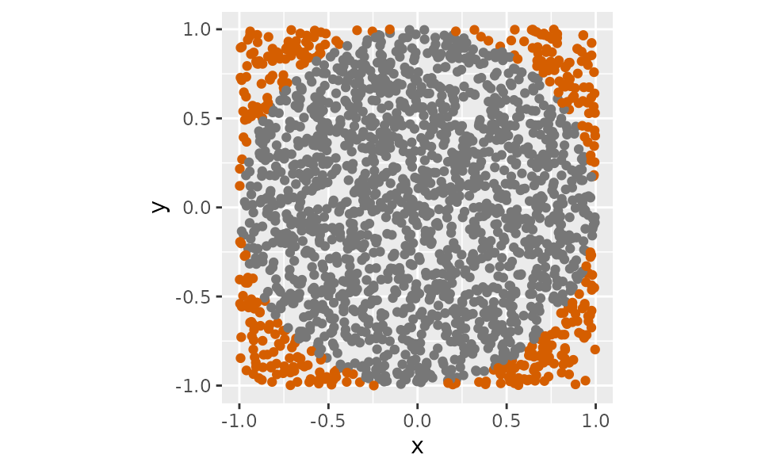
The proportion of points lying outside the circle in the corners of the space (shown in orange) is 21.5%.
The equivalent plot in 3-dimensions is shown in Figure 3.5. The unit sphere is now a ball sitting within a box, and 47.6% of points lie outside the ball.
Code
df <- tibble(
x = runif(2000, -1, 1),
y = runif(2000, -1, 1),
z = runif(2000, -1, 1),
within_sphere = (x^2 + y^2 + z^2) < 1,
color = if_else(within_sphere, "#777777", "#D55E00")
)
# rgl::plot3d(df[, 1:3],
# size = 5,
# col = df$color
# )As the number of dimensions grows, it becomes increasingly likely that points will lie in the corners of the space. In fact, the proportion of points lying outside the unit sphere in d dimensions is 1 minus the ratio of the volume of the unit sphere to the volume of the whole space. This is given by 1 - \frac{\pi^{d/2}}{2^d\Gamma(d/2 + 1)} where \Gamma is the gamma function, and is plotted in Figure 3.6.
Code
tibble(d = seq(10)) |>
mutate(outside = 100 * (1 - (pi^(d / 2) / (2^d * gamma(d / 2 + 1))))) |>
ggplot(aes(x = d, y = outside)) +
geom_line() +
labs(x = "Dimensions (d)", y = "Percentage of points outside unit sphere") +
scale_x_continuous(breaks = seq(10), minor_breaks = NULL)
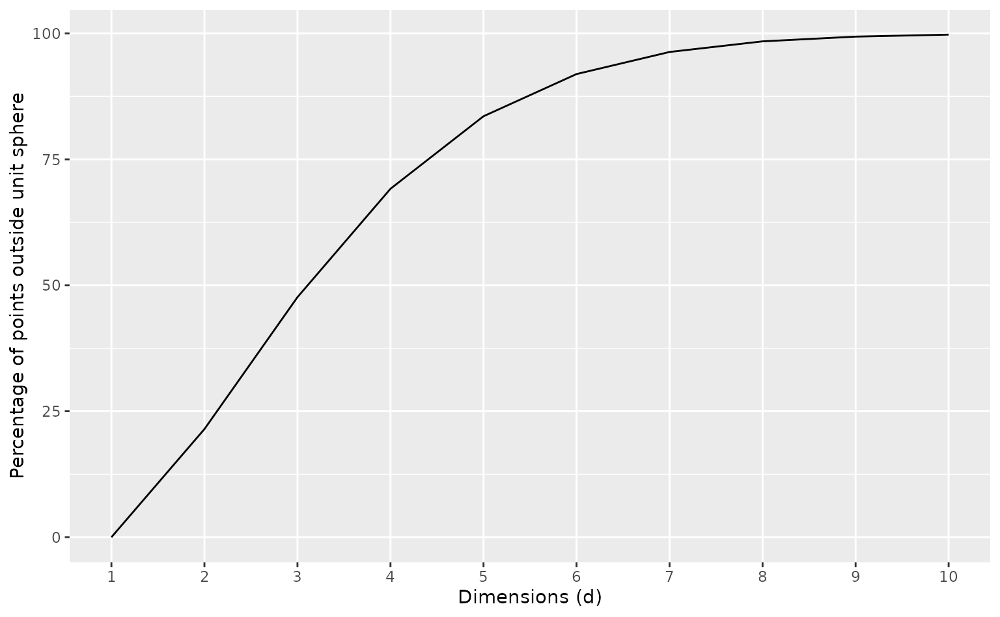
Remarkably, by 10 dimensions, almost all points lie outside the unit sphere, and live in the corners of the space. Almost no points are in the centre of the space. This occurs because, with enough variables, at least one of the univariate observations is going to lie in the tails of the distribution, and so the multivariate observation will not lie near the centre of the space.
Another way to think about this is to consider hypercubes that contain 50% of the observations. These must have sides of length 2^{1-1/d}, in order for the volume of the hypercube to be 2^{d-1}, exactly half of the entire space. For d=1, the hypercube is a unit interval. For d=2, it is a square of side length \sqrt{2} \approx 1.41 as shown in Figure 3.7. For d=3, the central cube must have side length 2^{2/3} \approx 1.59, and so on.
Code
tibble(
x = runif(2000, -1, 1),
y = runif(2000, -1, 1),
within_cube = (abs(x) < 2^(-1 / 2)) & (abs(y) < 2^(-1 / 2))
) |>
ggplot(aes(x = x, y = y, color = within_cube)) +
geom_point() +
coord_fixed() +
scale_color_manual(values = c("#D55E00", "#777777")) +
guides(col = "none")
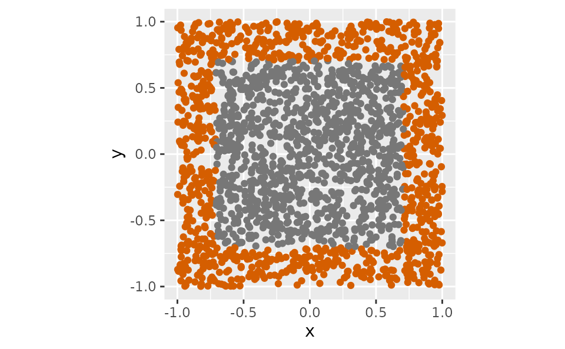
As the dimension d increases, the size of the hypercube containing 50% of the observations must also increase. Figure 3.8 shows the side length of these hypercubes plotted against the dimension d.
Code
tibble(d = seq(20)) |>
mutate(length = 2^(1 - 1 / d)) |>
ggplot(aes(x = d, y = length)) +
geom_line() +
geom_point() +
labs(x = "Dimensions (d)", y = "Side length of hypercube containing 50% of points") +
scale_x_continuous(breaks = seq(2, 20, by = 2), minor_breaks = NULL) +
ylim(1, 2)
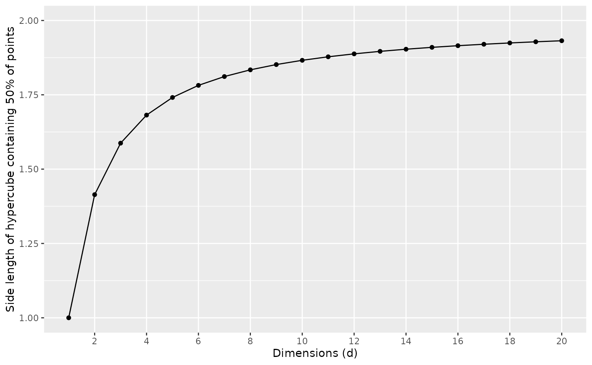
The side lengths of these hypercubes increasingly approaches the maximum of 2 as the number of dimensions increases. So the size of the neighbourhood containing 50% of the observations becomes almost as large as the whole space. Therefore, we cannot use methods that rely on local neighbourhoods in high dimensions, as these neighbourhoods must become so large as to no longer be “local”.
3.3 Joint probability distributions
Now we have a sense of what it means to have data in many dimensions, let’s consider how we can describe the joint probability distribution of multiple variables.
Statistical definitions
Suppose \bm{Y} = [Y_1,\dots,Y_n]' is a random variable taking values in \mathbb{R}^d, the d-dimensional real numbers. Then the joint distribution of \bm{Y} is defined by the joint cdf F(\bm{y}) = \text{Pr}(\bm{Y} \le \bm{y}), while the joint density function is given by f(\bm{y}) = \frac{\partial^n F(\bm{y})}{\partial y_1 \dots \partial y_d}.
The marginal cdfs are defined by F_i(y) = \text{Pr}(Y_i \le y), with corresponding marginal pdfs given by f_i(y) = F_i'(y), i=1,\dots,d.
If the variables are independent, then the joint pdf is the product of the marginal pdfs, f(\bm{y}) = \prod_{i=1}^d f_i(y_i).
The expected value of \bm{y} is given by \text{E}(\bm{Y}) = \int_{\mathbb{R}^d} \bm{y} f(\bm{y})d\bm{y}, and the covariance matrix is given by \text{Var}(\bm{Y}) = \text{E}[(\bm{Y}-\text{E}(\bm{Y}))(\bm{Y}-\text{E}(\bm{Y}))']. The covariance matrix is a d\times d matrix, with (i,j)th element given by \text{Cov}(Y_i,Y_j) = \text{E}[(Y_i-\text{E}(Y_i))(Y_j-\text{E}(Y_j))]. The diagonal elements are the variances of the individual variables, while the off-diagonal elements are the covariances between the variables.
Multivariate Normal distribution
If random variable \bm{Y} has a multivariate Normal distribution, we write \bm{Y} \sim \text{N}(\bm{\mu}, \bm{\Sigma}), where \bm{\mu} is the mean and \bm{\Sigma} is the covariance matrix.
The multivariate Normal distribution has pdf given by f(\bm{y}; \bm{\mu}, \bm{\Sigma}) = (2\pi)^{-d/2}|\bm{\Sigma}|^{-1/2} \exp\left\{-\frac{1}{2}(\bm{y}-\bm{\mu})'\bm{\Sigma}^{-1}(\bm{y}-\bm{\mu})\right\}. The notation |\bm{\Sigma}| denotes the determinant of the matrix \bm{\Sigma}.
Multivariate Normal distributions have the interesting property that the marginal distributions are also Normal.
Further reading
A good reference on multivariate probability distributions is Kotz, Balakrishnan, and Johnson (2000).
3.4 Highest density regions
As with univariate distributions, a highest density region for a multivariate distribution is defined as the region of the sample space where the density is higher than a given threshold. Suppose we have a multivariate random variable \bm{Y} with a smooth, continuous density function f. Then the 100(1-\alpha)% HDR is the set R_\alpha = \{\bm{y}: f(\bm{y}) \ge f_\alpha\} \tag{3.1} where P(\bm{Y} \in R_\alpha) = 1-\alpha.
HDRs are equivalent to level sets of the density function, and so can be plotted as contours for bivariate density functions. For example, the bivariate Normal distribution with mean (0,0) and covariance matrix \Sigma = \begin{bmatrix} 1 & 0.5 \\ 0.5 & 1 \end{bmatrix} is shown in Figure 3.9 as a series of HDR contours, each containing an additional 10% of the probability mass.
Code
mu <- c(0, 0)
Sigma <- matrix(c(1, 0.5, 0.5, 1), 2, 2)
distributional::dist_multivariate_normal(list(mu), list(Sigma)) |>
gg_density(hdr = "fill") +
labs(
x = latex2exp::TeX("$y_1$"), y = latex2exp::TeX("$y_2$"),
title = latex2exp::TeX("Contours of $f(y_1,y_2)$")
)
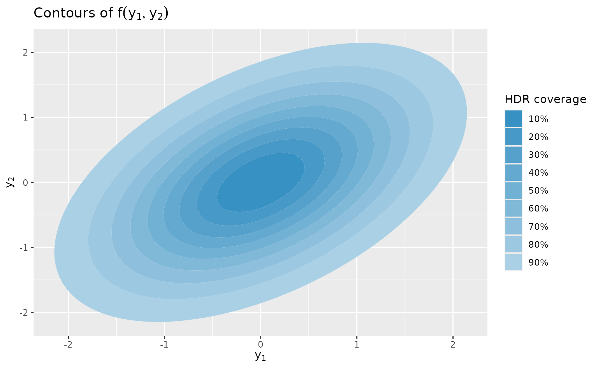
Similarly, we can obtain HDRs for a mixture distribution. Suppose we had two bivariate Normal distributions with means (0,0) and (3,1), and covariance matrices equal to \begin{bmatrix} 1 & 0.5 \\ 0.5 & 1 \end{bmatrix} and the identity matrix \bm{I}_2 respectively. Then the HDRs for an equal mixture of these two distributions is shown in Figure 3.10.
Code
mu1 <- c(0, 0)
mu2 <- c(3, 1)
Sigma1 <- rbind(c(1, 0.5), c(0.5, 1))
Sigma2 <- diag(2)
mixture_density <- dist_mixture(
dist_multivariate_normal(mu = list(mu1), sigma = list(Sigma1)),
dist_multivariate_normal(mu = list(mu2), sigma = list(Sigma2)),
weights = c(0.5, 0.5)
)
mixture_plot <- mixture_density |>
gg_density(hdr = "fill") +
labs(
x = latex2exp::TeX("$y_1$"), y = latex2exp::TeX("$y_2$"),
title = latex2exp::TeX("Contours of $f(y_1,y_2)$")
)
mixture_plot
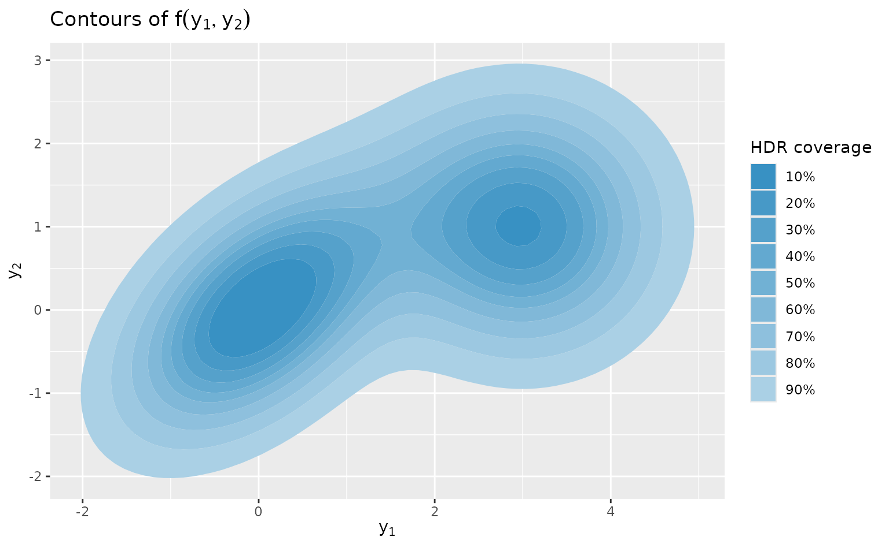
Here, the 10%, 20%, 30% and 40% HDRs contain disconnected regions, but for the larger HDRs, there is just one region for each.
3.5 Multivariate quantiles
Unlike the univariate case, there is no unique definition of a multivariate quantile. There are many different definitions, and each has its own advantages and disadvantages.
In this book, we are mostly concerned with sample multivariate quantiles, and one useful definition for sample quantiles is based on data depth. We will discuss this approach in Section 5.5.
3.6 Robust covariance estimation
The sample covariance matrix is a useful measure of the spread of a multivariate distribution, given by \bm{S} = \frac{1}{n-1} \sum_{i=1}^n (\bm{y}_i - \bar{\bm{y}})(\bm{y}_i - \bar{\bm{y}})', \tag{3.2} However, it is sensitive to outliers, and so is not suitable for our purposes. There have been many robust estimators of covariance proposed in the literature, but we will discuss only one, relatively simple, estimator known as the “orthogonalized Gnanadesikan/Kettenring” (OGK) estimator (Gnanadesikan and Kettenring 1972; Maronna and Zamar 2002).
Suppose we have two random variables X and Y. Then the variance of their sum and difference is given by \begin{align*} \text{Var}(X+Y) &= \text{Var}(X) + \text{Var}(Y) + 2\text{Cov}(X,Y) \\ \text{Var}(X-Y) &= \text{Var}(X) + \text{Var}(Y) - 2\text{Cov}(X,Y). \end{align*} The difference between these two expressions is \text{Var}(X+Y) - \text{Var}(X-Y) = 4\text{Cov}(X,Y), so that the covariance can be expressed as \text{Cov}(X,Y) = \frac{1}{4} \left[ \text{Var}(X+Y) - \text{Var}(X-Y)\right]. Now we can use a robust estimate of variance, such as the one based on Qn (Section 2.6), to estimate the two variances on the right hand side, giving \hat{s}(X,Y) = \frac{1}{4} \left[ s_{\text{Qn}}^2(X+Y) - s_{\text{Qn}}^2(X-Y)\right]. We can repeat this for each pair of variables, to obtain a robust estimate of the covariance matrix, \bm{S}^*. The diagonals can be obtained using the same robust measure of variance. This is known as the Gnanadesikan-Kettenring estimator. The resulting matrix is symmetric, but not necessarily positive definite, which is a requirement of a covariance matrix. So some additional iterative steps are applied to “orthogonalize” it.
- Compute the eigenvector decomposition of \bm{S^*}, so that \bm{S}^* = \bm{U}\bm{\Lambda}\bm{U}^{-1}.
- Project the data onto the basis eigenvectors
- Estimate the variances (robustly) in the coordinate directions.
- Then the robust covariance matrix is given by \bm{S}_{\text{OGK}} = \bm{U}\bm{\Lambda}^*\bm{U}^{-1}, \tag{3.3} where \bm{\Lambda}^* is a diagonal matrix with the robust variances on the diagonal.
These orthogonalization steps are usually repeated one more time.
This procedure is implemented in the covOGK function in the robustbase package (Maechler et al. 2023).
3.7 Multivariate kernel density estimation
Suppose our observations are d-dimensional vectors, \bm{y}_1,\dots,\bm{y}_n. Then the multivariate version of Equation 2.6 is given by (Scott 2015) \hat{f}(\bm{y}) = \frac{1}{n} \sum_{i=1}^n K_H(\bm{y} - \bm{y}_i), \tag{3.4} where K_H is a multivariate probability density with covariance matrix \bm{H}. In this book, we will use a multivariate Gaussian kernel given by K_H(\bm{u}) = (2\pi)^{-d/2} |\bm{H}|^{-1/2} \exp \{-\textstyle\frac12 \bm{u}'\bm{H}^{-1}\bm{u} \}.
Bivariate kernel density estimation
To illustrate the idea, consider a simple bivariate example of 10 observations: the first 10 eruption durations from 2021 that are in the oldfaithful data set, along with the corresponding waiting times until the following eruption. These are shown in the figure below along with the contours of bivariate kernels placed over each observation. Here we have used a bivariate Gaussian kernel with bandwidth matrix given by \bm{H} = \left[\begin{array}{rr}265 & 4139 \\ 4139 & 152871\end{array}\right].
Code
h <- sqrt(diag(H))
k <- tidyr::expand_grid(
x = seq(-3 * h[1], 3 * h[1], l = 100),
y = seq(-3 * h[2], 3 * h[2], l = 100)
) |>
mutate(z = mvtnorm::dmvnorm(x = cbind(x, y), sigma = H))
of2021kde <- of2021 |>
mutate(k = list(k)) |>
tidyr::unnest(k) |>
mutate(x = x + duration, y = y + waiting)
ggplot() +
geom_contour(
data = of2021kde, aes(x = x, y = y, group = eruption, z = z),
bins = 4, col = "gray"
) +
geom_point(data = of2021, mapping = aes(x = duration, y = waiting)) +
labs(x = "Duration (seconds)", y = "Waiting time (seconds)")
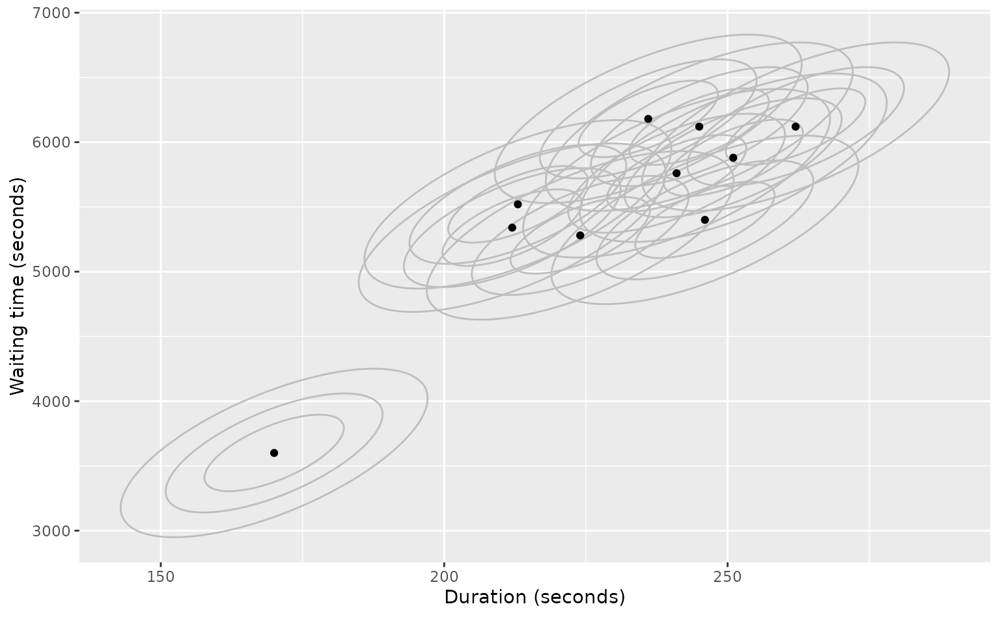
oldfaithful data set.
If we add the bivariate kernel functions as in Equation 3.4, we obtain the bivariate kernel density estimate shown below. The contours shown correspond to the 10%, 20%, \dots, 90% highest density regions (HDRs) of the density estimate.
Code
oldfaithful |>
filter(as.Date(time) > "2021-01-01") |>
head(10) |>
select(duration, waiting) |>
dist_kde() |>
gg_density(show_points = TRUE) +
labs(x = "Duration (seconds)", y = "Waiting time (seconds)")
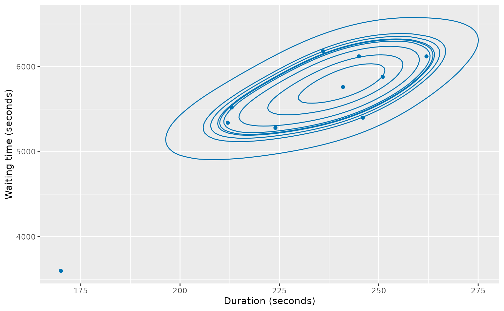
Now we will apply the method to the full data set, other than the 2 hour eruption and observations where the subsequent waiting time is more than 2 hours (which are likely to be data errors).
We will use the dist_kde() function, which uses a bivariate Gaussian kernel, and the bandwidth matrix given by the kde_bandwidth() function.
oldfaithful |>
filter(duration < 7000, waiting < 7000) |>
select(duration, waiting) |>
dist_kde() |>
gg_density(show_points = TRUE) +
labs(x = "Duration (seconds)", y = "Waiting time (seconds)")
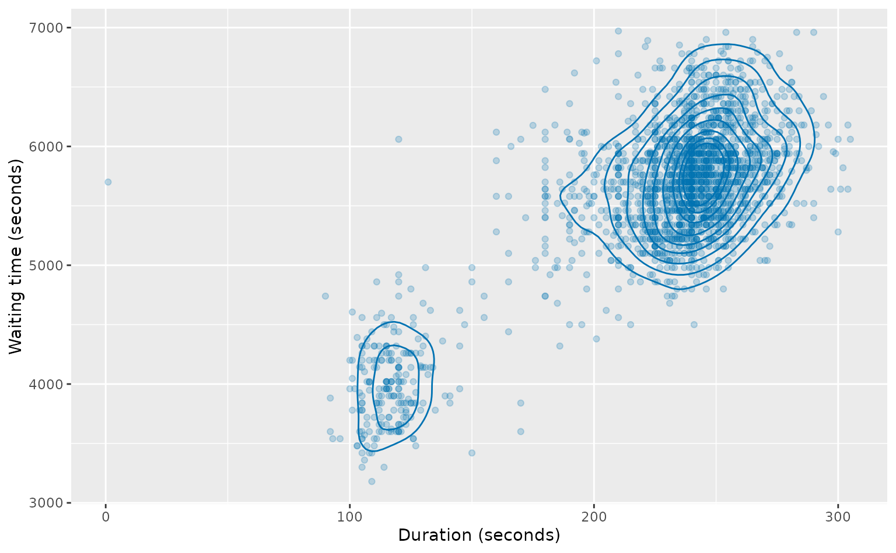
Here we see that the short durations tended to be followed by a short waiting time until the next duration, while the long durations tend to be followed by a long waiting time until the next duration. There are two anomalous eruptions: the one with the 1 second duration, and one where a short duration was followed by a long waiting time. The unusual durations between 150 and 180 seconds can be followed by either short or long durations.
Bandwidth matrix selection
The optimal bandwidth matrix (minimizing the mean integrated squared error between the true density and its estimate) is of the order n^{-2/(d+4)}. If such a bandwidth matrix is used, then the estimator converges at rate n^{-4/(d+4)}, implying that kernel density estimation becomes increasingly difficult as the dimension d increases. This is to be expected given the curse of dimensionality (Section 3.2), as the number of observations required to obtain a good estimate increases exponentially with the dimension. In practice, we rarely attempt to estimate a density in more than d=3 dimensions.
If the underlying density is Normal with mean \bm{\mu} and variance \bm{\Sigma}, then the optimal bandwidth matrix is given by \bm{H} = \left(\frac{4}{d+2}\right)^{2/(d+4)} n^{-2/(d+4)} \bm{\Sigma}. \tag{3.5} Notice that in the univariate case, when d=1, this rule gives the same bandwidth as the rule of thumb given by Equation 2.7.
Replacing \bm{\Sigma} by the robust covariance matrix \bm{S}_{\text{OGK}} (Equation 3.3), we obtain a robust normal reference rule, calculated by kde_bandwidth(). Figure 3.13 shows a bivariate kernel density estimate computed using this approach.
A more data-driven approach, is the “plug-in” estimator (Chacón and Duong 2018) implemented by ks::Hpi(), which is a generalization of the plug-in bandwidths popular for univariate kernel density estimation Section 2.7. While this typically leads to better estimates of the density as a whole, it can lead to worse estimates in the tails of the distribution where anomalies tend to lie.
A common approach is to specify \bm{H} to be diagonal, with elements equal to the squares of univariate bandwidth rules. (The univariate bandwidths are usually defined as the standard deviation of the kernel, while multivariate bandwidth matrices correspond to the covariance matrix of the kernel. Hence, the univariate bandwidths need to be squared if used in a bandwidth matrix.) That is, if h_1,\dots,h_d are the univariate bandwidths for each of the variables, then the corresponding diagonal bandwidth matrix is given by \bm{H} = \text{diag}(h_1^2,\dots,h_d^2). For example, geom_density_2d() uses a bivariate Gaussian kernel with diagonal bandwidth matrix where the diagonal values are given by the squares of Equation 2.14. However, this approach leads to bandwidths that are too small, as it ignores the convergence properties of the multivariate estimator. Additionally, any diagonal bandwidth matrix implicitly assumes that the variables are uncorrelated, and leads to more biased estimators.
As with univariate density estimation, when estimating the density in the tails of the distribution, it is usually better to have a larger bandwidth than those given by the rules above. By default, the kde_bandwidth() function will return the bandwidth matrix given by the normal reference rule (Equation 3.5) with \bm{\Sigma} estimated using Equation 3.3. When method = "double", it will return the same matrix multiplied by 4 (because it is a variance, doubling the scale increases the matrix by a factor of four).
Further reading
There is a rich literature on multivariate kernel density estimation. Good starting points are Scott (2015) or Chacón and Duong (2018).
3.8 Conditional probability distributions
A fundamental concept in statistics is a conditional probability distribution; that is, the distribution of a random variable conditional on the values of other (possibly random) variables.
Almost all statistical modelling involves the estimation of conditional distributions. For example, a regression is a model for the conditional distribution of a response variable given the values of a set of predictor variables. In its simplest form, we assume the conditional distribution is normal, with constant variance, and mean equal to a linear function of the predictor values. Generalized linear models allow for non-normal conditional distributions, while generalized additive models allow for non-linear relationships between the response and the predictors.
The conditional cdf of Y given X_1,\dots,X_n is defined by the conditional cdf F(y\mid x_1,\dots,x_n) = \text{Pr}(Y \le y \mid X_1 = x_1,\dots,X_n = x_n). The conditional pdf is given by f(y \mid x_1, \dots, x_n) = \frac{f(y,x_1,\dots,x_n)}{f(x_1,\dots,x_n)}. The conditional pdf can be thought of as slices of the joint pdf, with the values of x_1,\dots,x_n fixed, rescaled to ensure the conditional pdfs integrate to 1. For example, f(y_1 | y_2) is equal to a scaled slice of the joint pdf f(y_1,y_2) at y_2. Figure 3.14 shows some examples for the distribution shown at Figure 3.10 at several values of y_2. The left plot shows the joint density, with horizontal lines indicating where conditioning (or slicing) occurs at different values of y_2. The right plot shows the resulting conditional density functions.
Code
# Conditioning points
y2_slice <- -2:3
# Compute bivariate density over a grid
df <- expand.grid(
y1 = seq(-3, 6, length = 100),
y2 = y2_slice
)
df$density <- density(mixture_density, at = as.matrix(df))[[1]]
# Scaling factor for each density
scale_cond_density <- df |>
summarise(scale = sum(density), .by = y2) |>
mutate(scale = scale / max(scale))
# Scale each conditional density
df <- df |>
left_join(scale_cond_density, by = "y2") |>
mutate(
density = density / scale,
density = density / max(density) * 0.9
)
# Joint density plot
plot1 <- mixture_plot +
guides(fill = "none") +
scale_y_continuous(breaks = y2_slice, minor_breaks = NULL) +
coord_cartesian(xlim = c(-2.6, 5.5), ylim = c(-2.6, 3.6)) +
geom_hline(aes(yintercept = y2), data = tibble(y2 = y2_slice), color = "#4c93bb")
# Conditional density plots
plot2 <- df |>
ggplot(aes(x = y1, y = density + y2, group = y2)) +
geom_ribbon(aes(ymin = y2, ymax = density + y2, xmin = -2, xmax = 4),
col = "#4c93bb", fill = "#4c93bb"
) +
labs(
x = latex2exp::TeX("$y_1$"), y = latex2exp::TeX("$y_2$"),
title = latex2exp::TeX("Conditional densities: $f(y_1|y_2)$")
) +
scale_y_continuous(minor_breaks = NULL, breaks = y2_slice) +
coord_cartesian(xlim = c(-2.6, 5.5), ylim = c(-2.6, 3.6))
# Show plots side by side
patchwork::wrap_plots(plot1, plot2, nrow = 1)
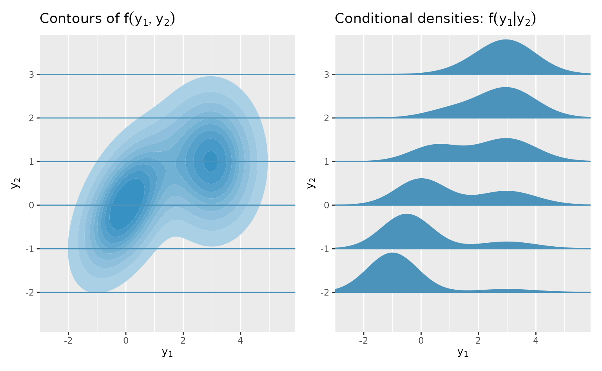
Another neat property of Normal distributions is that the conditional distribution of a subset of variables is also Normal. For example, suppose \bm{Y} = (Y_1,Y_2,Y_3) is a multivariate Normal random variable. Then the conditional distribution of Y_1 given Y_2 and Y_3 is also Normally distributed.
3.9 Multivariate scaling
Some anomaly detection methods will require the data to have been scaled first, to prevent the variables with the largest ranges from dominating.
Z-scores
One common approach is to apply univariate scaling on each variable, by subtracting its mean and dividing by its standard deviation. This gives z-scores.
If our data are given by y_1,\dots,y_n, then their z scores are given by z_i = (y_i - \bar{y})/s_y where \bar{y} is the mean and s_y is the standard deviation of the observations. These are easily computed using the scale() function.
However, the mean and standard deviation may be affected by anomalies, and it would be better to use an approach that was robust to anomalies.
Robust z-scores
The simplest way to make the scaling robust to anomalies is to use the median instead of the mean, and to use a robust estimate of the standard deviation such as s_{\text{Qn}} (Section 2.6). Robust z-scores computed in this way can be obtained using the mvscale() function with the argument cov = NULL.
Multivariate z-scores
It is sometimes useful to scale a set of multivariate data, so that the scaled variables are uncorrelated with each other, and have mean zero and unit variance.
Suppose each observation is a vector \bm{y}, with most observations coming from a distribution with mean \bm{\mu} and covariance matrix \bm{\Sigma}. Let \bm{\Sigma}^{-1} = \bm{U}' \bm{U} be the Cholesky decomposition (see Section A.6) of \bm{\Sigma}^{-1}. Then the data can be scaled by \bm{U}, giving \bm{z} = \bm{U} (\bm{y} - \bm{\mu}), so that the covariance matrix of the scaled data is the identity matrix. This can be thought of as both scaling and rotating the data, so that the variables are uncorrelated with mean zero and unit variance. It is the multivariate equivalent of calculating z-scores. They can be computed using the mvscale() function with the arguments center = mean and cov = stats::cov.
Robust multivariate z-scores
When there may be anomalies in the data set, we can replace the mean by the pointwise median (i.e., the vector of medians for each variable), and estimate \bm{\Sigma} using the robust covariance matrix \bm{S}_{\text{OGK}} (Equation 3.3). The mvscale() function in the weird package will do this for us, by default.
Let’s consider the oldfaithful data again, where durations are much longer than waiting times. Figure 3.15 shows the data before and after scaling. The scaling has rotated the data a little, and the variables are now less correlated, and centered on zero. The right plot still appears to show some positive relationship between the variables, because the covariance matrix used for scaling was computed robustly, and so was largely based on the upper cluster of points.
Code
of <- oldfaithful |>
filter(duration < 7000, waiting < 7000)
p1 <- of |>
ggplot(aes(x = duration, y = waiting)) +
geom_point(alpha = 0.2) +
labs(
title = "Original data",
x = "Duration of eruption (seconds)",
y = "Waiting time to next eruption (seconds)"
)
p2 <- mvscale(of, warning = FALSE) |>
ggplot(aes(x = z1, y = z2)) +
geom_point(alpha = 0.2) +
labs(
title = "Scaled data",
x = latex2exp::TeX("$z_1$"), y = latex2exp::TeX("$z_2$")
)
patchwork::wrap_plots(p1, p2, nrow = 1)